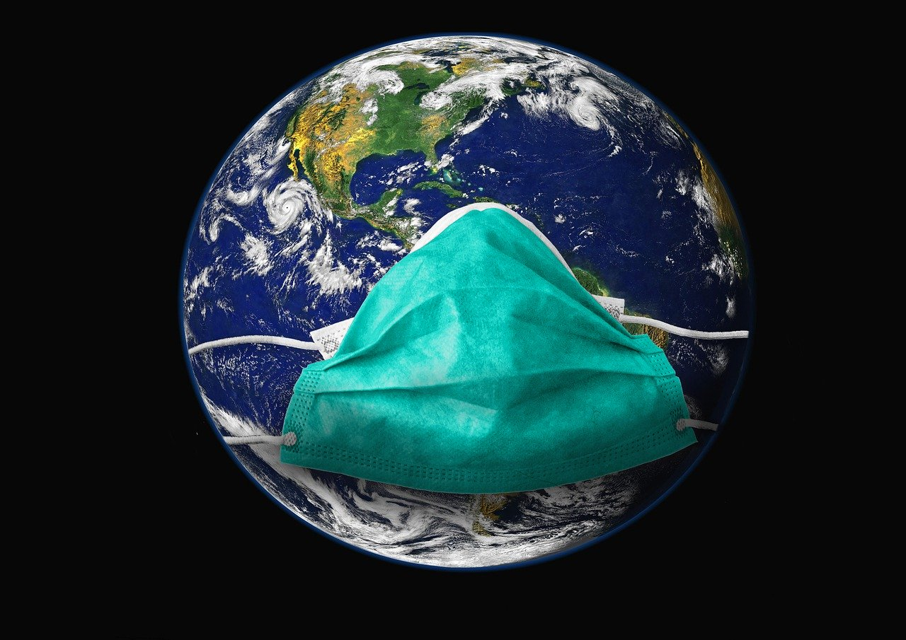

Медицинская маска как спасение: мифы и правда о профилактике коронавируса
Материал обновлён 31 июля 2020 года: Добавлена статистика по ношению масок и распространению коронавируса, видеоинструкция от команды @medsupportkz и актуализированные рекомендации ВОЗ.
В мире настоящий бум продаж медицинских масок (где-то даже дефицит).Но помогут ли они в реальности не подцепить инфекцию?Коронавирус COVID-19 оброс огромным количеством фейков, касающихся не только масштабов эпидемии, опасности вируса, его заразности, но и способов терапии и профилактики.Объясняем, зачем и кому нужны маски и в каких случаях они не нужны.
Маски могут помочь, отвечает Всемирная организация здравоохранения.Но — при правильном использовании.
Обновлено 31 июля 2010: 5 июня ВОЗ обновила рекомендации в отдельном подразделе и во временном документе с рекомендациями, ВОЗ конкретизирует правила использования медицинских масок и рекомендует носить их при определённых условиях.Согласно этим данным:
То есть, в обычной ситуации, если вы не больны и не контактируете тесно с заражённым человеком или массой других людей, обычная медицинская маска имеет смысл только в качестве психотерапевтического инструмента (при этом важно вовремя менять маску иначе она может принести вред, а не пользу).
Тем не менее, исследования показывают, что в условиях пандемии правильное ношение масок в местах скопления людей может быть эффективным способом борьбы с новым коронавирусом.
ВОЗ рекомендует носить маски в условиях, когда невозможно соблюдение физической дистанции более 1 метра.

Важно: ношение масок детям до двух лет — не рекомендуется!
ВОЗ предлагает правильный алгоритм действий.
Также подчёркивается: одновременное ношение нескольких масок не помогает бороться с COVID-19!
Регулярное мытьё рук мылом или обработка спиртосодержащим средством.
Соблюдение дистанции от людей как минимум в 1 метр в общественных местах (особенно, если у них кашель, насморк или повышенная температура).
По возможности, исключение касаний руками глаз, носа и рта.
Соблюдение правил респираторной гигиены — рот при кашле и чихании рекомендуется прикрывать салфеткой либо сгибом локтя (салфетку следует сразу же выбросить в контейнер с крышкой, а руки помыть с мылом, либо обработать антисептиком).
При повышении температуры, появлении кашля и затруднении дыхания скорое обращение за медицинской помощью.
Отслеживание новейшей информации о коронавирусе и выполнение рекомендаций медицинских специалистов (ВОЗ рассчитывает на то, что у центральных и местных органов здравоохранения имеется самая актуальная информация о динамике заболеваемости COVID-19).
Фактчекеры в разных странах мира продолжают бороться со случаями вбросов непроверенных и фейковых данных.
Так, борцы с дезинформацией вынуждены были доказывать, что приём внутрь отбеливателя от коронавируса не помогает («лайфхак» распространялся в действительности), да и коровья моча целительными свойствами не обладает.
Factcheck.kz писал также, что промывать нос раствором мыла не стоит, а ВОЗ пришлось официально опровергать чудодейственные свойства чеснока, приписываемые ему народной молвой.
К сожалению, уже есть жертвы фейковой информации: недавно в Иране семь человек погибли, выпив метиловый спирт.Его они приняли «для защиты от коронавируса».Анализ появляющихся в Казахстане фейков и хронику коронавируса вы можете найти по тегу «коронавирус».
Внесите свой вклад в борьбу с дезинформацией!
Posted On: 2020-03-12T00:00:00
Posted By: Сергей Ким
Content Date: 2020-03-12
Download Date: 2021-04-21
Document ID: L0C04ANB4